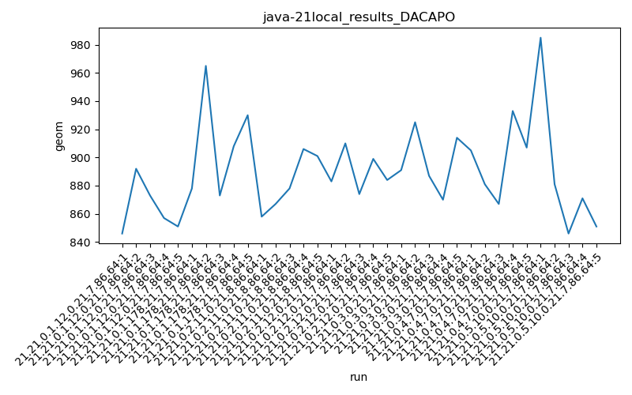

java-21 DACAPO
Context at bottom
/home/jvanek/git/benchmarks-in-nested-virtualisation-toolchain/final_results/local_results/local_results_J2DBENCH
java-21
DACAPO
/home/jvanek/git/benchmarks-in-nested-virtualisation-toolchain/final_results/local_results/local_results_SPECJBB
java-21
DACAPO
/home/jvanek/git/benchmarks-in-nested-virtualisation-toolchain/final_results/local_results/local_results_RADARGUNs1
java-21
DACAPO
/home/jvanek/git/benchmarks-in-nested-virtualisation-toolchain/final_results/local_results/local_results_RADARGUNs3
java-21
DACAPO
/home/jvanek/git/benchmarks-in-nested-virtualisation-toolchain/final_results/local_results/local_results_JMH
java-21
DACAPO
/home/jvanek/git/benchmarks-in-nested-virtualisation-toolchain/final_results/local_results/local_results_DACAPO
java-21
DACAPO
local_results_DACAPO
final score
Expected number of java-21 JDKs: 7
1st avgmed_alljdks_metric:
/home/jvanek/git/benchmarks-in-nested-virtualisation-toolchain/final_results/result_processing.py /home/jvanek/git/benchmarks-in-nested-virtualisation-toolchain/final_results/local_results/local_results_DACAPO geom False
values: [846, 892, 873, 857, 851, 878, 965, 873, 908, 930, 858, 867, 878, 906, 901, 883, 910, 874, 899, 884, 891, 925, 887, 870, 914, 905, 881, 867, 933, 907, 985, 881, 846, 871, 851]

Expected number of iterations: 5
final number of values: 35 out of 35
Pass rate: 100.0%
values: (846, 985, 889.9142857142857, 883)

** accuracy from all jdks and runs
more is better
MIN: 846
MAX: 985
AVG: 889.9142857142857
MED: 883
Relative differences 1:
MIN-MAX: 14.0 %
MIN-AVG: 5.0 %
MIN-MED: 4.0 %
MAX-MIN: -16.0 %
MAX-AVG: -11.0 %
MAX-MED: -12.0 %
AVG-MED: -1.0 %
stored to java-21.properties. sort | uniq that!
2nd avgmed_by_jdk_metric:
values: [863.8, 910.8, 882.0, 890.0, 897.4, 898.6, 886.8]

values: [857, 908, 878, 884, 891, 905, 871]

values: (863.8, 910.8, 889.9142857142857, 890.0)
values: (857, 908, 884.8571428571429, 884)

** accuracy from all jdks where runs were avged
more is better
MIN: 863.8
MAX: 910.8
AVG: 889.9142857142857
MED: 890.0
Relative differences 1:
MIN-MAX: 5.0 %
MIN-AVG: 3.0 %
MIN-MED: 3.0 %
MAX-MIN: -5.0 %
MAX-AVG: -2.0 %
MAX-MED: -2.0 %
AVG-MED: 0.0 %
stored to java-21.properties. sort | uniq that!
** accuracy from all jdks where runs were medianed
more is better
MIN: 857
MAX: 908
AVG: 884.8571428571429
MED: 884
Relative differences 1:
MIN-MAX: 6.0 %
MIN-AVG: 3.0 %
MIN-MED: 3.0 %
MAX-MIN: -6.0 %
MAX-AVG: -3.0 %
MAX-MED: -3.0 %
AVG-MED: -0.0 %
stored to java-21.properties. sort | uniq that!
pass rates:
local_results_DACAPO=100.0%
Context:
- local_results
- DACAPO